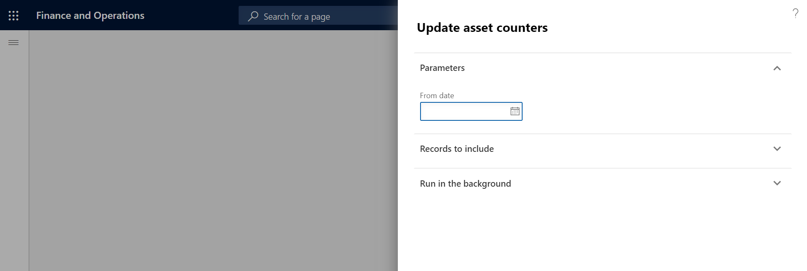
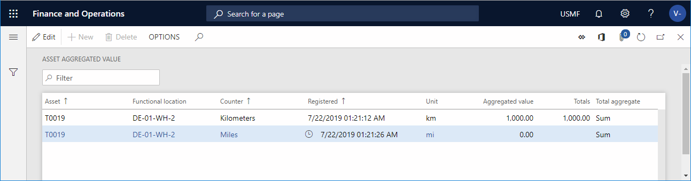

Die automatische Aktualisierung von Anlagenzählern
Important
Dynamics 365 for Finance and Operations hat sich zu speziell entwickelten Anwendungen entwickelt, mit denen Sie bestimmte Geschäftsfunktionen verwalten können. Weitere Informationen zu diesen Änderungen finden Sie im Dynamics 365-Lizenzierungshandbuch.
Informationen zur manuellen Erfassung von Anlagenzählern finden Sie unter Manuelle Aktualisierung der Anlagenzähler. Informationen zum Einrichten von Anlagenzählern finden Sie unter Zähler.
Zählerwerte können auch aus Produktionserfassungen automatisch aktualisiert werden, die auf Produktionsstunden oder Produktionsmenge basieren (d. h. der produzierten Menge). Die Aktualisierung wird auf der Seite Anlagenzähler aktualisieren ausgeführt. Sie können eine oder mehrere Anlagen aktualisieren, indem Sie den Parameter Von Datum festlegen. Dieser Parameter gibt das Startdatum für Produktionserfassungen an (Produktionsstunden oder Produktionsmengen). Das bedeutet, er gibt das Datum an, ab dem die Zählerwerte aktualisiert werden sollen.
Alle Anlagen, die einer Ressource zugeordnet sind und Anlagenzähler enthalten, die so eingerichtet wurden, das sie basierend auf den Produktionsstunden oder der Produktionsmenge aktualisiert werden, werden in einer automatischen Aktualisierung berücksichtigt. Neue Zählerwerte werden erstellt.
Für Zähler, die auf der Produktionsmenge basieren, umfasst die Anzahl sowohl die Gutmenge als auch die Ausschussmenge, die erfasst wurde. Wenn die Einheit, die für die Erfassung der Produktionsmenge verwendet wird, sich von der Einheit unterscheidet, die für den Zähler verwendet wird, wird die Menge konvertiert, um der Zählereinheit zu entsprechen.
Wie bereits angegeben können automatische Zähler aus Produktionserfassungen aktualisiert werden. Daher muss die Anlage, für die Sie automatisch Zähler aktualisieren möchten, einer Ressource (Maschine) zugeordnet werden. Bei produzierte Mengen oder Produktionsstunden für die Ressource erfasst wurden, können Sie die zugehörigen Anlagenzähler aktualisieren.
Wählen Sie Anlagenverwaltung > Periodisch > Anlagen > Anlagenzähler aktualisieren aus.
Wählen Sie im Feld Von Datum das Startdatum der automatischen Aktualisierung aus.
Note
Das Datum in diesem Feld ist das Datum „In Bearbeitung“ aus Arbeitsplanbuchungen (Feld Produktionssteuerung > Abfragen und Berichte > Produktion > Arbeitsplanbuchungen > Physisches Datum).
Auf dem Inforegister Einzuschließende Datensätze können Sie bestimmte Anlagen, Anlagentypen oder Ressourcen für die automatische Aktualisierung auswählen. Wählen Sie Filtern aus und treffen Sie die zutreffende Auswahl.
Im Inforegister Im Hintergrund ausführen können Sie die automatische Aktualisierung bei Bedarf als Batchauftrag einrichten.
In der folgenden Abbildung wird ein Beispiel des Dialogfelds Anlagenzähler aktualisieren angezeigt.

Wählen Sie OK.
Wenn die automatische Aktualisierung von Anlagenzählern erfolgt ist, können Sie die Zählererfassungen anzeigen, die auf die Anlage auf der Seite Anlagenzähler bezogen sind. Wählen Sie Anlagenverwaltung > Allgemein > Anlagen > Alle Anlagen aus, wählen Sie die Anlage aus, und wählen Sie dann im Aktivitätsbereich auf der Anlage-Registerkarte in der Gruppe Vorbeugend Zähler aus.
Auf der Seite Aggregierter Wert für Anlage können Sie einen Überblick der letzten Erfassung abrufen, die für alle Zählertypen für alle Anlagen erstellt wurde. Wählen Sie Anlagenverwaltung > Abfragen > Anlagen > Aggregierter Wert für Anlage aus. Diese Seite ähnelt der Seite Anlagenzähler, Sie können jedoch keine Erfassungen hinzufügen oder bearbeiten. Es ist nur für den Überblick.
In der folgenden Abbildung wird ein Beispiel der Seite Aggregierter Wert für Anlage angezeigt.

Beachten Sie die folgenden Punkte:
Es ist trotzdem möglich, manuelle Zählerwerterfassungen für Zählertypen zu erstellen, die automatisch aktualisiert werden. Weitere Informationen finden Sie unter Manuelle Aktualisierung von Anlagenzählern.
Sie können Zähler einrichten, die einem anderen Zähler zugeordnet werden. In diesem Fall, wenn ein Zähler aktualisiert wird, werden zugehörige Zähler automatisch gleichzeitig aktualisiert. Weitere Informationen zum Einrichten von zugehörigen Zählern finden Sie unter Zähler.